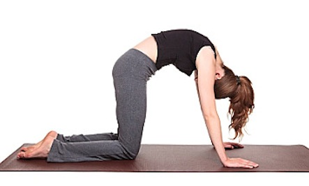

Anjali Mudra(Salutation Seal): Practicing Anjali Mudra is an excellent way to induce a meditative state of awareness. Most of the time we perform it with our hands in the center of our heart chakra. This represents the balance and harmony between the right and left side reunited on our center. This balance can be not only physical but also mental and emotional, and the idea is to bring us to the center to prepare ourselves for meditation and contemplation. Start this sequence by practicing this mudra while seated in a comfortable cross-legged position with your eyes closed.
Sukhasana(Easy Pose): Easy Pose has some great benefits in addition to promoting groundedness and inner calm, such as: opens your hips, lengthens your spine, amplifies the state of serenity, tranquility, and eliminates anxiety, relieves physical and mental exhaustion and tiredness. Focus on your breath in this pose and sit still with a straight spine for at least 60 seconds.

Marjaryasana(Cat Pose): This pose provides a gentle massage to the spine and belly organs while acting as a powerful stress buster. This pose is often paired with Cow Pose on the inhale for a gentle, flowing vinyasa. Marjaryasana also benefits overall health by stimulating the digestive tract and spinal fluid. For proper alignment place wrists directly under the shoulders and knees under the hips.
Bitilasana(Cow Pose): Cow Pose is an easy, gentle way to warm up the spine. This pose is often paired with Cat Pose on the exhale for a gentle, flowing vinyasa. In addition to relieving stress and calming the mind, this pose also: massages and stimulates organs in the belly, like the kidneys and adrenal glands, and creates emotional balance. For proper alignment place wrists directly under the shoulders and knees under the hips.
Uttana Shishosana(Extended Puppy Nose): This pose is a cross between Child’s Pose and Downward Facing Dog. It lengthens the spine and calms the mind and invigorates the body. This pose also relieves symptoms of chronic stress, tension, and insomnia.
Paschimottanasana(Seated Forward Bend): Paschimottanasana can help a distracted mind unwind. Seated Forward Bend is a basic yet challenging pose with several benefits in addition to relieving stress and anxiety. Additional benefits include: stretches the hamstrings, spine, and lower back, improves digestion, relieves symptoms of PMS and menopause, reduces fatigue, stimulates the liver, kidneys, ovaries, and uterus. Keep the feet flexed and lower your forehead toward your knees.
Janu Sirsasana(Head-to-Knee Forward Bend): A forward bend for all levels of students, Janu Sirsasana is also a spinal twist. This pose calms the brain and helps relieve mild depression anxiety, fatigue, headache, menstrual discomfort and insomnia. You can do this pose with both arms reaching for the extended foot, or by rotating your torso sideways and extending the outer arm over your head.
Salamba Sirsasana(Supported Headstand): Standing on your head in proper alignment calms the brain and strengthens the body. Headstand can help ease anxiety by reversing the blood flow and forcing you to focus on the breath and the body in the present moment. This pose also gives the heart a rest by saving it from pumping blood back up from your lower body, as it has to do when you are standing.This pose can be practiced against a wall if you are a beginner. Make sure the weight is resting on your forearms and shoulders rather than your head and neck. Proper alignment in this pose would allow a piece of paper to slip through your head and the mat.
Balasana(Child's Pose): Child’s Pose is a perfect counterbalance pose to supported headstand. Try sitting on the knees and bending forward with arms forward or by your side. Resting your forehead on the ground in this pose will help to relieve additional anxiety. It is a restful pose that can be sequenced between more challenging asanas. This pose can also be done with arms along side the body rather than over the head. Do what feels best to you.
Savasana(Corpse Pose): Savasana is a pose of total relaxation, making it one of the most challenging asanas. Shavasana gives the nervous system a chance to integrate that in what can be thought of as a brief pause before it is forced once again to deal with all the usual stresses of daily life. Lie on your back with your eyes closed, arms by your sides and palms facing up. Allow your ankles to fall outward. Allow your body to melt deeper into the mat with each breath. Stay in this pose for a minimum of 5 minutes.